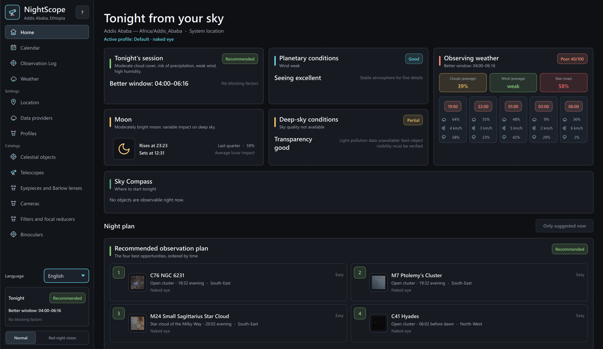

Empieza por tu cielo
Puesta de Sol, oscuridad, altura, Luna, meteorología y calidad del cielo se evalúan para la ubicación y la noche seleccionadas.
NightScope convierte tu ubicación, equipo y condiciones del cielo en un plan práctico para observación visual y astrofotografía.

NightScope combina geometría astronómica, pronósticos locales y tu equipo real, y presenta ventanas útiles y factores limitantes con un lenguaje claro.
Puesta de Sol, oscuridad, altura, Luna, meteorología y calidad del cielo se evalúan para la ubicación y la noche seleccionadas.
Telescopios, prismáticos, oculares, cámaras y telescopios inteligentes se consideran sin inventar compatibilidades no declaradas.
Descubre qué merece la pena observar, cuándo hacerlo, qué puede dificultarlo y qué configuración se adapta mejor al objeto.
Las recomendaciones son prácticas y transparentes: los datos ausentes siguen ausentes, la incertidumbre es visible y la observación visual no se mezcla con la ruta fotográfica.
Un plan breve ordenado por tiempo, ventanas útiles de observación y alternativas para el objeto que deseas ver.
Compara los instrumentos del perfil activo y recibe contexto concreto sobre telescopio, ocular y tren óptico.
Campo de cámara, muestreo, exposición y vídeo del Sistema Solar se mantienen separados de la clasificación visual.
La guía direccional te lleva del plan a la zona correcta del cielo cuando un objeto recomendado es observable.
Eventos anuales, pasos visibles de la ISS y ventanas de cometas de varias noches conviven sin forzarse en puntuaciones de objetos.
Una interfaz roja persistente protege la adaptación a la oscuridad; observaciones y equipo permanecen almacenados localmente.
Explora objetos del Sistema Solar, Messier, Caldwell y NGC. Las entradas Messier y Caldwell seleccionadas incluyen descripciones, notas de observación, curiosidades científicas e imágenes acreditadas.
Cada paquete de plataforma se valida y publica de forma independiente; por eso las versiones actuales de Windows y Linux son diferentes.
Extrae el archivo en una carpeta con permisos de escritura y ejecuta NightScope. La base de datos, las preferencias y las imágenes personales quedan junto a la aplicación.
Descargar para WindowsDescarga el tarball y su archivo SHA-256 adyacente. Qt de escritorio, D-Bus, GeoClue y Secret Service siguen siendo servicios del sistema.
Descargar para LinuxWindows 1.46.13 incluye ilustraciones por categoría y fotos personales de los objetos. Linux sigue en 1.43.0 y aún no incluye estas funciones. Los números indican los paquetes publicados; el código fuente puede ser más reciente.
NightScope usa la licencia MPL 2.0. El repositorio incluye instalación, arquitectura, pruebas, procedencia de datos y documentación de paquetes.
NightScope tiene un enfoque deliberado: ayuda a decidir qué observar y deja los mapas celestes y el control de hardware a herramientas dedicadas.
No. NightScope es un planificador de apoyo a decisiones. Recomienda objetos, horarios y configuraciones; no es un atlas celeste, no controla la montura ni sustituye las prácticas de observación segura.
No se necesita una cuenta de NightScope. Los cálculos astronómicos principales y el catálogo son locales. Los proveedores meteorológicos y ambientales opcionales usan Internet y algunos requieren credenciales.
Los paquetes portátiles se crean, auditan y publican por separado. Windows está en la versión 1.46.13; el paquete público de Linux permanece en la 1.43.0 hasta que una versión posterior complete la validación.
Empieza por el manual multilingüe o consulta la documentación técnica en el repositorio de GitHub.
Descarga NightScope gratis, crea tu perfil de equipo y haz evidente la próxima ventana de observación útil.